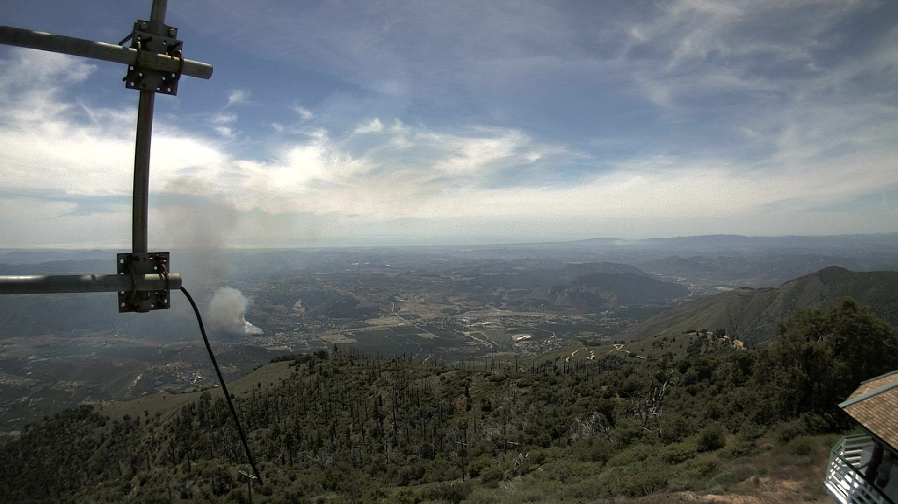
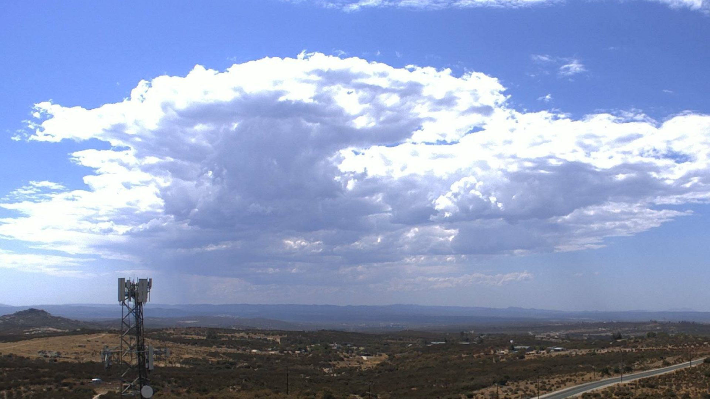
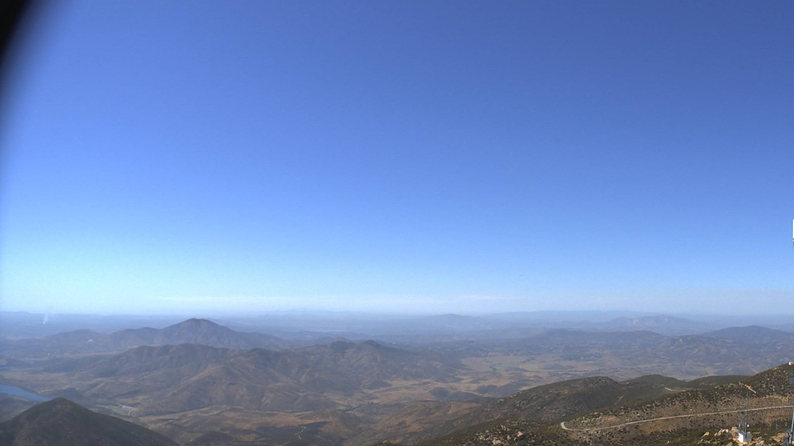
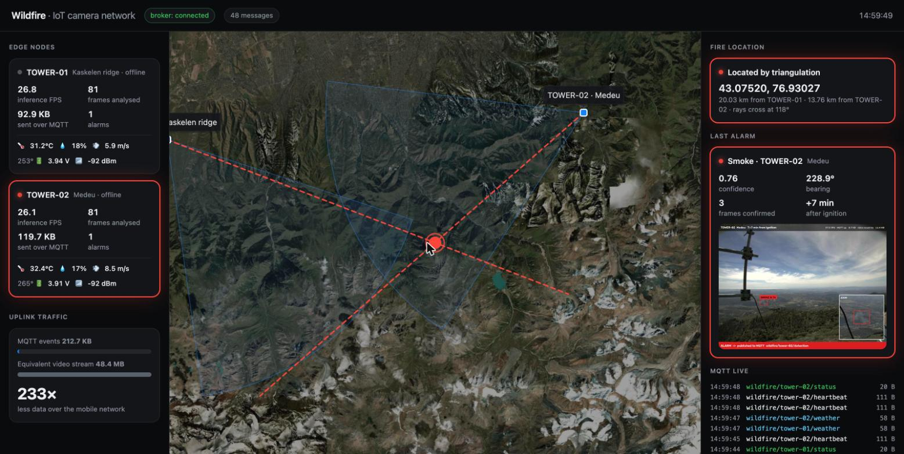
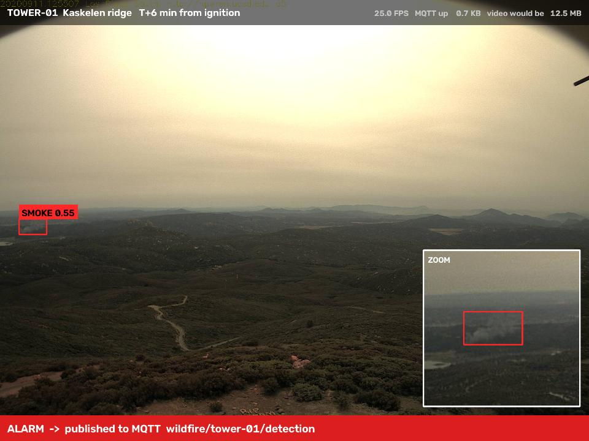
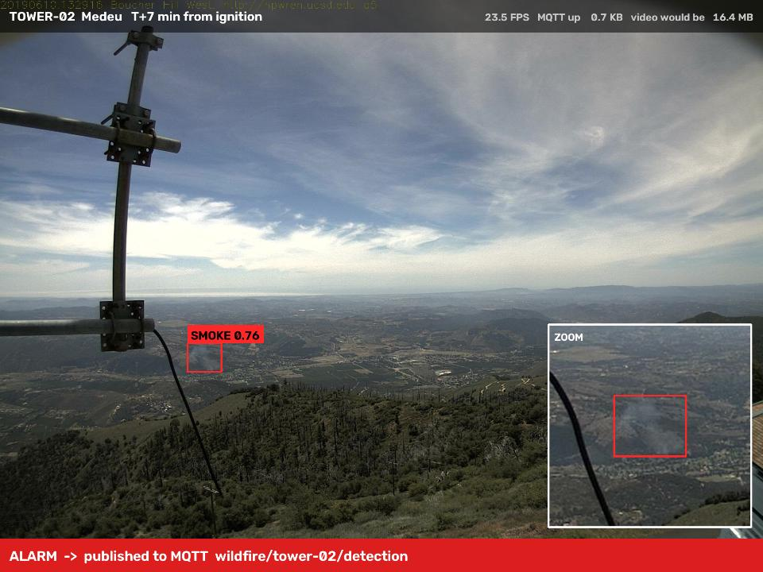
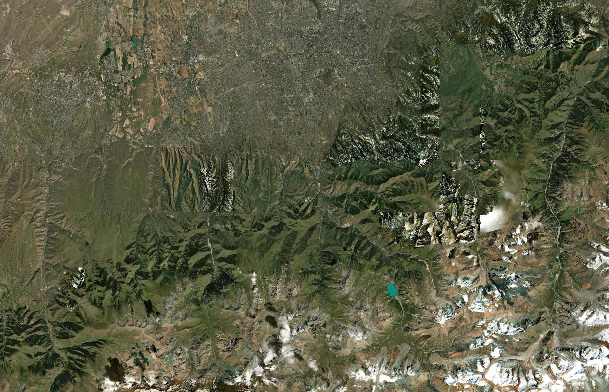

IoT system
Architecture

Kanatbay Alibek · Shaykhmetov Alimzhan
KBTU · 2026

Satellite products such as NASA FIRMS report hotspots hours after a fire starts. A camera on a tower sees the smoke column almost at once.
satellite hotspot reports, depending on overpass and processing
median time from ignition to alarm on our eight test fires
Goal
Recognise smoke in tower camera video, estimate where it is, and alert an operator with as few false alarms as possible.

Fixed PTZ camera on a fire tower
NEXTRaspberry Pi 5 or Jetson Orin Nano: YOLO smoke detector, 3-frame filter, bearing
LIVE · on laptopMQTT broker, Python backend, triangulation
LIVETimescaleDB + PostGIS, MinIO, Grafana
NEXTLive map console and Telegram alerts
LIVETemperature, humidity, wind on the same tower
LIVE · simulatedless uplink traffic: towers analyse frames on site and send only small events.
| <tower>/status | Retained, Last Will “offline” | 20 B |
| <tower>/heartbeat | Every 3 s: FPS, uplink | 111 B |
| <tower>/detection | QoS 1: bearing, JPEG | 70–90 KB |
| <tower>/weather | NB-IoT, short keys | 58 B |
| server/fire | Retained fire position | 155 B |
fire sequences from HPWREN tower cameras, one frame per minute, 40 minutes before and after ignition
Test set todaytower imagery and an open smoke detector, Apache-2.0, trained for early smoke
Baseline todaylabelled smoke and flame images in YOLO format
Our training · nextof satellite hotspots for Kazakhstan, clustered with DBSCAN into a fire-risk map
Risk map · next| Fire | First hit | Alarm | False before |
|---|---|---|---|
| 2019 · bh-w | +3 | +7 | 0 |
| 2019 · lp-s | +5 | +7 | 0 |
| 2020 · om-n | +5 | +7 | 0 |
| 2020 · rm-w | – | missed | 0 |
| 2020 · pi-s | +4 | +6 | 0 |
| 2021 · wc-e | +0 | +5 | 0 |
| 2023 · pi-s | +0 | +6 | 0 |
| 2024 · ws-s | +1 | +3 | 1 |
Minutes after ignition, HPWREN FIgLib sequences.



Fly to the fix, confirm smoke from close range, and measure localisation error against the drone's GPS.
Geometry is a staged scenario: HPWREN footage replayed on two virtual towers near Almaty.
Click anywhere on the map. Each tower decides if it can see the smoke, finds it in its frame and turns the pixel into a bearing.

Imagery: Esri, Maxar, Earthstar GeographicsNo rangefinder. A laser reaches a few kilometres and smoke is not a solid target. Distance comes from a second tower, or from terrain (DEM) for a single tower.